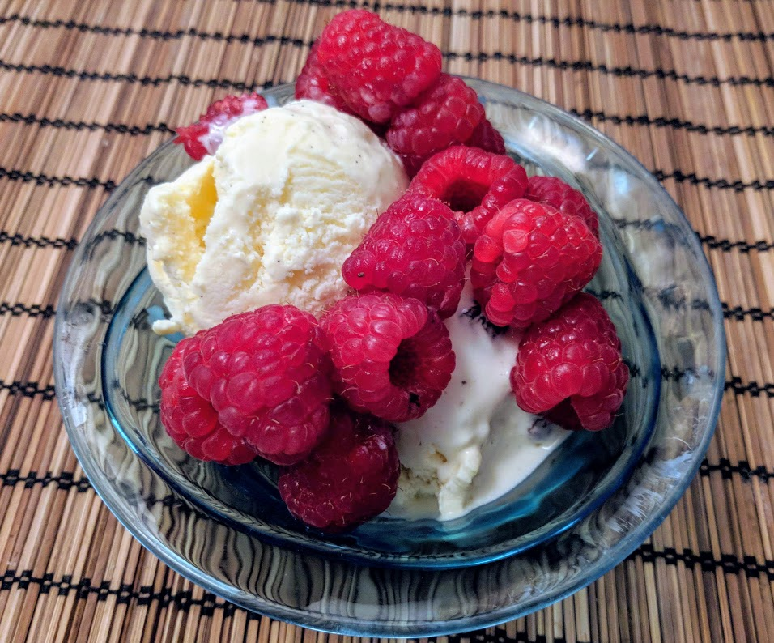

Glace à la vanille

Pour un litre de glace :
- Un demi-litre de lait
- 4 jaunes d'œuf
- 70g de sucre
- Une gousse de vanille
- 15cL de crème liquide entière (ou un poil plus, mais pas plus de 20cL)
- Préparer une crème anglaise en suivant ma recette, excepté pour la gousse de vanille, qu'il faut couper en longueur et vider dans la crème (du coup, ensuite, enlever les morceaux mais sans les passer à la passoire fine, pour que les petites graines noires restent dans le mélange). Laisser refroidir le résultat quelques heures au moins et la conserver au frais.
- Mettre la crème entière et un saladier au congélateur pendant une vingtaine de minutes.
- Mettre la crème dans le saladier (si ça n'était pas déjà fait), et la monter en chantilly. C'est comme battre des œufs en neige, mais ça prend plus de temps, et c'est à peu près impossible pour un être humain normal de faire ça sans batteur électrique. Si ça ne marche pas, la remettre au congélateur un peu plus longtemps, il faut qu'elle soit bien froide.
- Ajouter la chantilly dans la crème anglaise en trois-quatre fois, mélanger doucement avec une cuillère en bois pour que ça devienne homogène.
- Passer à la sorbetière une petite demi-heure, puis la mettre au congélateur au moins quelques heures pour que ça durcisse un peu avant de la déguster.